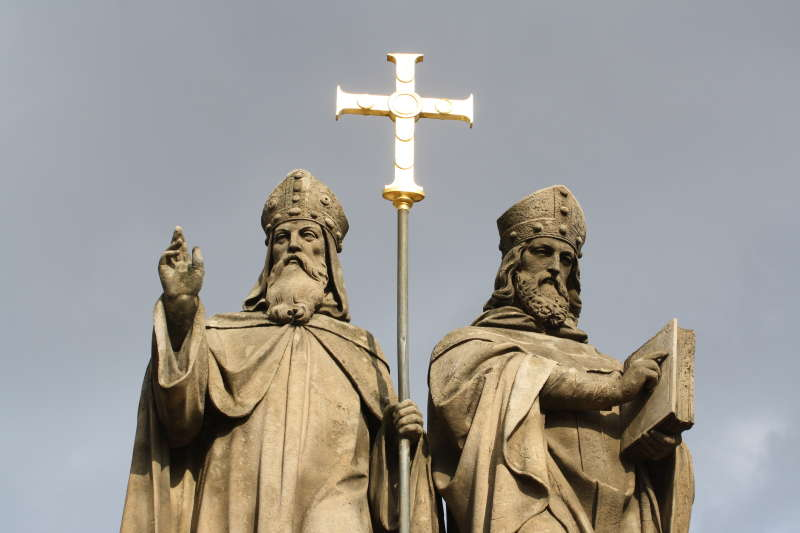

855 - Creation, recognition and dissemination of the Slavic script

The emergence of the Old Bulgarian alphabet and the Slavic script is related to the work of the two first
teachers Cyril and Methodius and their students, as well as the policy of Byzantium and Bulgaria to influence
the Balkan and Middle Danube Slavs.The two brothers have the highest Byzantine education, they know the Slavic
language well, as they were born in Thessaloniki to a Slavic mother (Methodius was born in 815, and his younger
brother Constantine in 826). They are close to the imperial court - Methodius held the high position of archon,
and Constantine the Philosopher participated in two state missions - the Saracens in 855 and the Khazars in 860.
From 855 to 862 the two brothers worked in the monastery "St. Polychron ”in Asia Minor, composed the first
Slavic alphabet - Glagolitic and began translating the liturgical books together with their Slavic students. When
in 863 the Great Moravian Prince Rostislav asked the Byzantine emperor to send him teachers to preach in the
Slavic language, the two brothers Constantine the Philosopher and Methodius left on a new mission to Great
Moravia, where in the period from 863 to 869 together with his students carry out active educational activities
among the Danube Slavs and train hundreds of priests and teachers.At the church debate in Venice, Constantine
the Philosopher successfully defended the right of the Slavs to have their own written liturgical language on a
par with Greek and Latin. Cyril and Methodius were solemnly received by Pope Adrian II in Rome, the Pope
consecrated the Slavic books and a liturgy in the Slavic language was celebrated.